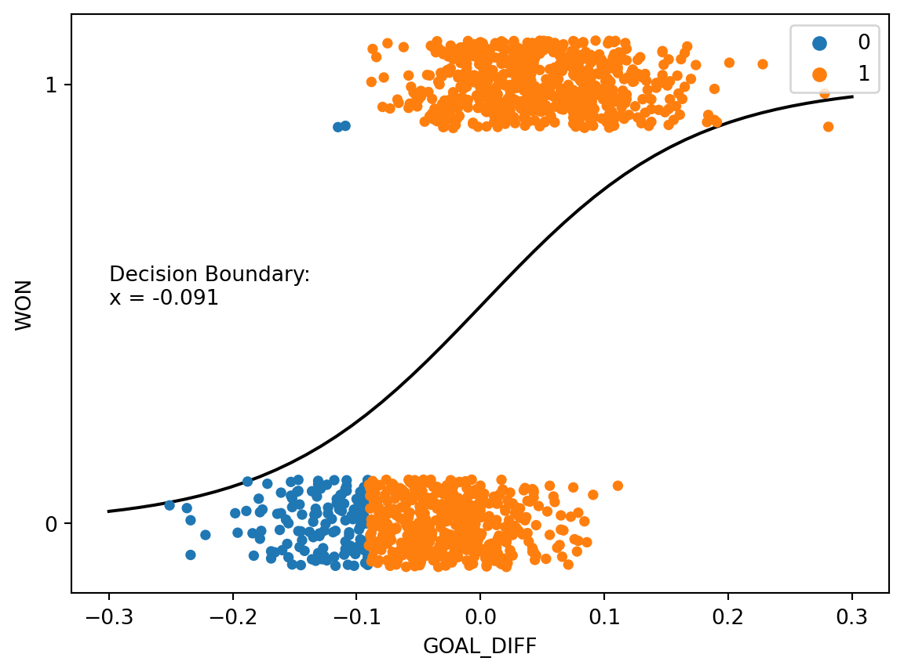
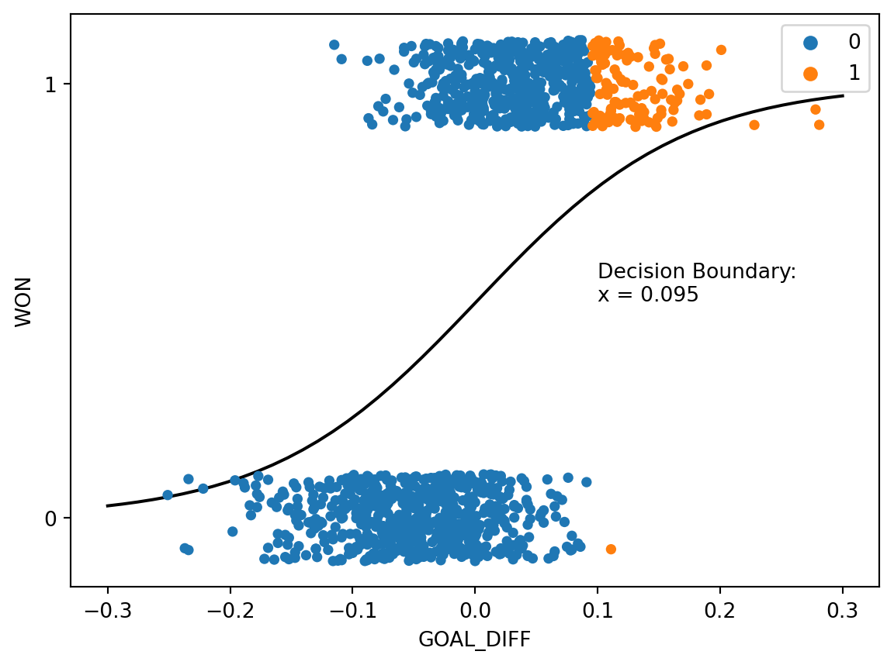

Code
import pandas as pd
import numpy as np
import seaborn as sns
import matplotlib.pyplot as plt
import warnings
warnings.filterwarnings("ignore")
games = pd.read_csv("data/games")In the previous lecture, we made our way through the beginnings of the classification process. We reframed our understanding of the modeling process in terms of predicted probabilities. We then derived the logistic regression model to predict the probability of a datapoint belonging to Class 1, given inputted features.
In this lecture, we’ll address the second phase of a classification task: applying a decision rule to interpret these predicted probabilities and classify a datapoint. We’ll also explore metrics to assess the performance of our classifiers on real-world data.

To classify a datapoint as Class 1 or Class 0, we need to interpret the predicted probability outputted by our logistic regression model. We’ll do so by applying a decision rule: a rule that tells us, given a predicted probability \(p\), if we should predict \(\hat{Y}=1\) or \(\hat{Y}=0\).
Decision rules are commonly implemented by defining a threshold. If the predicted probability is equal to or greater than the threshold value \(T\), we classify the datapoint into Class 1. Otherwise, we classify the datapoint into Class 0.
\[\hat{Y} = \text{classify}(x) = \begin{cases} \text{Class 1} & p \geq T \\ \text{Class 0} & p < T \end{cases}\]
The threshold \(T\) is often 0.5, but not always. We’ll explore why we may apply different threshold values later this lecture.
Let’s try applying a threshold of \(T=0.5\) to a logistic regression model fitted to our games data. As before, we will attempt to predict the outcome of a game (win or lose) given the "GOAL_DIFF" between teams.
import pandas as pd
import numpy as np
import seaborn as sns
import matplotlib.pyplot as plt
import warnings
warnings.filterwarnings("ignore")
games = pd.read_csv("data/games")X = games[["GOAL_DIFF"]]
Y = games["WON"]We can create a logistic regression model in sklearn using the LogisticRegression class. It works very similarly to LinearRegression: we will initialize a model object, fit it, then use it to make predictions. Because we want to determine the probabilities predicted by our model, we will use the .predict_proba() method.
import sklearn.linear_model as lm
# Initialize a LogisticRegression object
model = lm.LogisticRegression()
# Fit the model to the data
model.fit(X, Y)
# Predict probabilities. We display only the first 5 rows for clarity
model.predict_proba(X)[:5, :]array([[0.9521269 , 0.0478731 ],
[0.94399293, 0.05600707],
[0.94208808, 0.05791192],
[0.94208808, 0.05791192],
[0.93384531, 0.06615469]])What’s going on here – why did we output a 2D array? By default, .predict_proba() will produce the predicted probability of a datapoint belonging to Class 0 as well as the probability of it belonging to Class 1. Notice that each row in the output above sums to 1.
To check which column represents which probability, we can call the .classes_ attribute. The output below tells us that the first column of .predict_proba() represents the probability of belonging to Class 0, while the second column is the probability of belonging to Class 1.
model.classes_array([0, 1])Let’s grab just the predicted probabilities of each datapoint belonging to Class 1: \(p=P(Y=1|x)\).
p = model.predict_proba(X)[:, 1]To categorize our datapoints into classes, we need to apply our decision rule. Recall that we are using a threshold of \(T=0.5\): this means that if the predicted probability for a datapoint is equal to or greater than \(0.5\), we’ll classify that point into Class 1.
# .astype(int) converts True and False to 1 and 0
(p >= 0.5).astype(int)array([0, 0, 0, ..., 1, 1, 1])Alternatively, the .predict() method of LogisticRegression will automatically apply a \(T=0.5\) threshold for us.
classes = model.predict(X)
games["Predicted Class"] = classes
# Visualize our results
def sigmoid(z):
return 1/(1+np.exp(-z))
x = np.linspace(-0.3, 0.3)
sns.stripplot(data=games, x="GOAL_DIFF", y="WON", hue="Predicted Class", orient="h")
plt.plot(x, sigmoid(model.intercept_ + model.coef_[0]*x), "k", label="P(Y=1|x)")
plt.gca().invert_yaxis();
In the cell above, we color each datapoint according to the class predicted by our model. We have also superimposed the fitted logistic regression curve.
Let’s break down what’s going on here. We said that any datapoint with a predicted probability equal to or greater than \(0.5\) should be categorized into Class 1. Equivalently, we can express this by saying:
"GOAL_DIFF", that leads to a predicted probability of exactly 0.5
Because we are now looking at the features of a datapoint when deciding which class to predict, it makes more sense to display only this input data. We do so by using a rugplot, which visualizes scatter points when we only have one variable.
# Determine the decision boundary
theta0 = model.intercept_
theta1 = model.coef_[0]
T = 0.5
db = (1/theta1)*(-np.log(1/T - 1) - theta0)
# Visualize the classified data
sns.rugplot(data=games, x="GOAL_DIFF", hue="Predicted Class")
plt.scatter(x=[db], y=[0.005], c="k", s=100)
plt.ylim(0, 0.1)
plt.yticks([], []);We have just uncovered our first example of a decision boundary. A decision boundary is a “line” that splits the data into classes based on its features. In the example above, the point marked in black is our decision boundary: we classify all datapoints to the right of the decision boundary as being Class 1, and all points to the left as being Class 0.
Why did we place “line” in quotes earlier? More formally, a decision boundary is a hyperplane: a linear combination of our model’s \(p\) features, expressed in \(p\) dimensions. In the example above, we had a model with one feature, so our decision boundary is a 1-dimensional point. If we had two features, our decision boundary would be a 2-dimensional line. Similarly, for a model with \(p\) features, our decision boundary is a hyperplane in \(p\) dimensions.
Let’s consider the decision boundary of a model with an intercept term and two features – "GOAL_DIFF" and "AST", which stands for the number of assists in a basketball game. Our logistic regression model for the probability of a team winning looks like:
\[p=\frac{1}{1+e^{-(\theta_0+\theta_1\text{GOAL\_DIFF}+\theta_2\text{AST})}}\]
The decision boundary represents all combinations of feature values that result in a predicted probability exactly equal to our threshold, \(T\). We can use this fact to derive the equation of our decision boundary hyperplane.
\[T=\frac{1}{1+e^{-(\theta_0+\theta_1\text{GOAL\_DIFF}+\theta_2\text{AST})}}\] \[\theta_0+\theta_1\text{GOAL\_DIFF}+\theta_2\text{AST} = -\log{(\frac{1}{T}-1)}\]
In the cell below, we plot the classifications made by our decision rule when \(T=0.5\). Notice that we are visualizing the decision boundary in terms of the features – we do not express boundaries in terms of \(Y\)!
X_two_feature = games[["GOAL_DIFF", "AST"]]
Y = games["WON"]
two_feature_model = lm.LogisticRegression()
two_feature_model.fit(X_two_feature, Y)
# This function plots the decision boundary such that AST is a function of GOAL_DIFF
theta0 = two_feature_model.intercept_
theta1, theta2 = two_feature_model.coef_[0]
T = 0.5
db = lambda goal_diff: (1/theta2)*(-np.log(1/T - 1) - theta1*goal_diff - theta0)
games["Predicted Class Two Features"] = two_feature_model.predict(X_two_feature)
sns.scatterplot(data=games, x="GOAL_DIFF", y="AST", hue="Predicted Class Two Features")
plt.plot(x, db(x), "k");
Let’s see how well our decision boundary separates the data into classes. In the cell below, we overlay the decision boundary on top of the true classes of the dataset.
sns.scatterplot(data=games, x="GOAL_DIFF", y="AST", hue="WON")
plt.plot(x, db(x), "k");
It turns out that our decision boundary doesn’t always get things “right.” Far away from the decision boundary, we see that most points are classified correctly. Closer to the hyperplane, however, there is a “muddled” region where some points with \(Y=1\) sit to the left of the boundary, and some points with \(Y=0\) sit to the right of the boundary.
This begs the question: in what situations can our classifier behave perfectly? That is, what does our data have to look like for us to be able to create a classifier that perfectly classifies all datapoints into the correct class?
A dataset is said to be linearly separable if there exists a hyperplane among the input features \(x\) that perfectly separates the two classes \(Y\). Put more practically: we say that a dataset is linearly separable if we can draw a straight line, in terms of the features, that splits the two classes.
When a dataset is linearly separable, we can create a classifier that perfectly separates the datapoints into classes.
If our classifier makes perfect classifications, does it also achieve 0 cross-entropy loss? To answer this question, consider the conditions under which cross-entropy loss approaches 0.
\[\text{Cross-Entropy Loss} = -\left(y\log{(p)}-(1-y)\log{(1-p)}\right)\]
For a single datapoint, cross-entropy loss is 0 if \(y=p\). That is:
When can our logistic regression model output predicted probabilities of exactly 0 or 1?
\[p=P(Y=1|x)=\frac{1}{1+e^{-x^{\top} \theta}}\]
When \(\theta \rightarrow \infty\), \(p \rightarrow 1\). Likewise, when \(\theta \rightarrow -\infty\), \(p \rightarrow 0\). Take a moment to examine the logistic regression model and convince yourself of these facts.
When our data is linearly separable, we run into the problem of diverging model parameters: the “optimal” parameters for the model approach positive or negative infinity. This can be a problem for a few reasons (beyond the fact that we can’t practically “plug” \(\infty\) into our model to make predictions).
Consider an artificially-generated “toy” dataset of two datapoints.
toy_df = pd.DataFrame({"x": [-1, 1], "y": [0, 1]})
sns.scatterplot(data=toy_df, x='x', y='y', hue="y", s=100, legend=None);
If we fit a logistic regression model with one feature to this data, we find a strange-looking cross-entropy loss surface.
def toy_model(theta1, x):
return 1/(1 + np.exp(-theta1 * x))
def mean_cross_entropy_loss_toy(theta1):
# Here we use 1 - sigma(z) = sigma(-z) to improve numerical stability
return - np.sum(toy_df['y'] * np.log(toy_model(theta1, toy_df['x'])) + \
(1-toy_df['y']) * np.log(toy_model(theta1, -toy_df['x'])))
thetas = np.linspace(-30, 30, 100)
losses = [mean_cross_entropy_loss_toy(theta) for theta in thetas]
plt.plot(thetas, losses, color = 'green')
plt.ylabel(r'Mean Cross Entropy Loss($\theta$)')
plt.xlabel(r'$\theta$');
plt.title("Mean Cross Entropy Loss Surface");
Though it’s difficult to see with the human eye, the “plateau” at large values of \(\theta\) is very slightly tilted downwards. We can confirm this by examining a few values for the mean cross-entropy loss. Notice that each loss is very slightly smaller than the preceding loss value.
losses[-5:][2.1134205496775648e-12,
1.1528555887710948e-12,
6.288303211477875e-13,
3.432809592141279e-13,
1.869615573468851e-13]This means that if we were to use gradient descent to optimize the model parameter \(\theta\), our gradient descent algorithm would never converge. It would continue to follow this slope “downwards” in an ongoing attempt to reduce the mean cross-entropy loss.
What’s more, a model fitted with diverging parameters is overconfident. As a thought experiment, say we were somehow able to fit a model to our toy dataset with \(\theta=\infty\). If we ran our model on a new datapoint \((x=-0.5, y=1)\), the model would predict \(p=\frac{1}{1+e^{-\infty(-0.5)}}=0\). The cross-entropy loss on this new datapoint would be \(-\left((1)\log{(0)}-(1-1)\log{(1-0)}\right)=\infty\). In other words, our model would make such a poor prediction that it would incur infinite loss!
To avoid the problem of diverging model parameters, we always regularize logistic regression models. This constrains the magnitude of the parameters. Fortunately, sklearn automatically applies regularization when creating a LogisticRegression model.
We’re in good shape: we’ve drived the logistic regression model to predict probabilities, and we’ve now introduced the idea of a decision rule to help us classify data into categories.
To help quantify how “well” or “poorly” our model is doing, we’ll introduce a set of classification performance metrics. You may wonder: why do we need any new metrics of performance? Don’t we already have cross-entropy loss? Recall that cross-entropy loss deals with the predicted probabilities outputted by the sigmoid curve. In practice, we are usually more interested in whether or not our model classifies the data appropriately – determining if each point should belong to Class 0 or 1 – rather than the precide probabilities it predicts.
The most basic evaluation metric is accuracy: the proportion of correctly classified points.
\[\text{accuracy} = \frac{\# \text{ of points classified correctly}}{\# \text{ of total points}}\]
Because we are working with binary labels of 0 or 1, computing the accuracy is equivalent to finding the average number of times our model makes a correct classification.
Y_hat = model.predict(X)
accuracy = np.mean(Y==Y_hat)
accuracy0.7943089430894309Alternatively, we can use the built-in .score() method from sklearn to compute the accuracy.
model.score(X, Y)0.7943089430894309Although accuracy is a very intuitive way of quantifying performance, it does come with drawbacks. Accuracy often misrepresents how well our model performs when there is class imbalance – that is, when there are signficantly more datapoints belonging to Class 1 than to Class 0, or vice-versa.
To help us derive new performance metrics that perform better in the presence of class imbalance, let’s take a moment to reflect on what “types” of classifications a model might make. There are four outcomes of any binary classification:
That was a lot of words. It is often easier to express the different types of classifications visually using a confusion matrix.
One way to remember this terminology is as follows:
With our understanding of possible classifications in hand, let’s define two new performance metrics.
Precision asks: of all the positive (Class 1) predictions made by the classifier, how many were truly positive?
\[\text{Precision} = \frac{TP}{TP+FP}\]
Recall asks: of all the observations that were truly positive (Class 1), how many did the classifier predict to be positive?
\[\text{Recall} = \frac{TP}{TP+FN}\]
Notice that precision and recall take slightly different approaches to quantifying how well the model performs. Precision examines all of the positive predictions made by the model; recall examines the datapoints that were truly positive.
In practice, we would like our classifier to have both high precision and high recall. This can sometimes be a challenging goal. Precision penalizes false positives – as the number of false positives increases, the precision decreases. We might try to improve precision by reducing the number of positive predictions we make (and, at the same time, increasing the number of negative predictions).
In contrast, recall penalizes false negatives – as the number of false negatives increases, the recall decreases. To avoid false negatives, we might increase the number of positive predictions we make while decreasing the number of negative predictions. This means that there is typically a trade-off when trying to maximize both precision and recall.
So, should we prioritize precision or recall? It depends on the context. In many medical settings, there might be a much higher cost to “missing” positive cases by producing a false negative (for example, failing to detect a dangerous medical condition). In such situations, we may choose to focus on minimizing the number of false negatives by maximizing recall.
Let’s introduce two more metrics.
The false positive rate (FPR) asks: out of all datapoints that were truly negative (Class 0), how many did the classifier incorrectly predict to be positive?
\[\text{FPR} = \frac{FP}{FP+TN}\]
A similar metric is the true positive rate (TPR), which finds the proportion of datapoints that were truly positive that the classifier correctly identified as positive. It is the same as recall defined above.
\[\text{FPR} = \frac{TP}{TP+FN}\]
Up until now, we have always been applying decision rules with a threshold of \(T=0.5\). When a predicted probability \(p\) was equal to or greater than \(0.5\) we predicted Class 1; otherwise, we predicted Class 0.
What happens when we change this threshold to some other value?
Consider first the case where we lower the threshold to \(T=0.25\). Any time the predicted probability of a datapoint belonging to Class 1 is greater than or equal to 0.25, the classifier will predict \(\hat{Y}=1\). In other words, if the classifier predicts a 25% chance or higher of a datapoint being positive, it will classify the point as being Class 1.
y_hat = (p>=0.25).astype(int)theta0 = model.intercept_
theta1 = model.coef_[0]
decision_boundary_T25 = (1/theta1)*(-np.log(1/0.25 - 1) - theta0)
x = np.linspace(-0.3, 0.3)
sns.stripplot(x=games["GOAL_DIFF"], y=games["WON"], hue=y_hat, orient="h")
plt.plot(x, sigmoid(model.intercept_ + model.coef_[0]*x), "k", label="P(Y=1|x)")
plt.gca().invert_yaxis()
plt.annotate(f"Decision Boundary:\nx = {np.round(decision_boundary_T25[0], 3)}", (-0.3, 0.5));
Notice that more datapoints are predicted to be Class 1 than when we used the threshold \(T=0.5\). This is because the model needs to be less “confident” before making a positive prediction – the predicted probability of being Class 1 only needs to be 25% or higher for a positive prediction. Also observe that the decision boundary has shifted left of its original position when \(T=0.5\). Changing the threshold value if equivalent to shifting the decision boundary.
When we raise the threshold to \(T=0.75\), we see the opposite behavior. The model will only predict Class 1 if there is a predicted 75% chance or higher of a datapoint belonging to Class 1, so we see fewer positive predictions. The decision boundary shifts right relative to the previous example.
y_hat = (p>=0.75).astype(int)theta0 = model.intercept_
theta1 = model.coef_[0]
decision_boundary_T75 = (1/theta1)*(-np.log(1/0.75 - 1) - theta0)
x = np.linspace(-0.3, 0.3)
sns.stripplot(x=games["GOAL_DIFF"], y=games["WON"], hue=y_hat, orient="h")
plt.plot(x, sigmoid(model.intercept_ + model.coef_[0]*x), "k", label="P(Y=1|x)")
plt.gca().invert_yaxis()
plt.annotate(f"Decision Boundary:\nx = {np.round(decision_boundary_T75[0], 3)}", (0.1, 0.5));
Taken together, we see that the value of the threshold \(T\) determines the relative number of positive and negative predictions.
How does changing the threshold impact the model’s performance? It depends on our dataset, as well as which metric we are considering. Let’s consider the accuracy of our logistic regression model on the games data. In the cell below, we test out many different possible values for the threshold. For each threshold value \(T\), we compute what accuracy our model achieves if we use that value \(T\) in our decision rule.
# Define performance metrics dependent on the threshold value
def predict_threshold(model, X, T):
prob_one = model.predict_proba(X)[:, 1]
return (prob_one >= T).astype(int)
def accuracy_threshold(X, Y, T):
return np.mean(predict_threshold(model, X, T) == Y)
def precision_threshold(X, Y, T):
Y_hat = predict_threshold(model, X, T)
return np.sum((Y_hat == 1) & (Y == 1)) / np.sum(Y_hat == 1)
def recall_threshold(X, Y, T):
Y_hat = predict_threshold(model, X, T)
return np.sum((Y_hat == 1) & (Y == 1)) / np.sum(Y == 1)
def tpr_threshold(X, Y, T): # Same as recall
Y_hat = predict_threshold(model, X, T)
return np.sum((Y_hat == 1) & (Y == 1)) / np.sum(Y == 1)
def fpr_threshold(X, Y, T):
Y_hat = predict_threshold(model, X, T)
return np.sum((Y_hat == 1) & (Y == 0)) / np.sum(Y == 0)# Compute accuracies for different thresholds
thresholds = np.linspace(0, 1, 100)
accs = [accuracy_threshold(X, Y, t) for t in thresholds]
# Plot accuracy as a function of the threshold
plt.plot(thresholds, accs)
plt.xlabel("Threshold")
plt.ylabel("Accuracy");With higher threshold values, we make fewer positive predictions (reducing the risk of false positives) but more negative predictions (increasing the risk of false negatives). With lower threshold values, the converse is true – we make more positive predictions and fewer negative predictions. Because the relative numbers of false negatives and positives change with each threshold value, the accuracy of the classifier varies with the threshold. It turns out that for our specific model and dataset, the threshold value that maximizes accuracy is a bit under \(0.5\).
print(f"Threshold that maximizes accuracy: T = {thresholds[np.argmax(accs)]}")Threshold that maximizes accuracy: T = 0.48484848484848486Changing the threshold value also allows us to more clearly see the trade-off between precision and recall described earlier. As the threshold increases, fewer positive predictions are made, decreasing the chances of a false positive while increasing the chances of a false negative. This means that precision increases while recall decreases.
precisions = [precision_threshold(X, Y, t) for t in thresholds]
recalls = [recall_threshold(X, Y, t) for t in thresholds]
plt.plot(thresholds, precisions, label="Precision")
plt.plot(thresholds, recalls, label="Recall")
plt.xlabel("Threshold")
plt.ylabel("Precision/Recall")
plt.legend();This means that we need to select our threshold value carefully as part of the model design process. If we are attempting to maximize the precision of our model, we may choose a large \(T\); if we are trying to maximize recall, we will likely choose a smaller \(T\).
A precision-recall curve visualizes the trade-off using a single graph trace. Each position on the precision-recall curve represents a possible choice of threshold value \(T\). We then plot the precision and recall that our model obtains when using that value for the threshold.
plt.plot(recalls, precisions)
plt.xlabel("Recall")
plt.ylabel("Precision");Often, we may attempt to maximize both precision and recall by selecting a threshold value that produces a point on the “bulge” of the curve in the upper righthand corner. This represents a point where both precision and recall are relatively high.
Alternatively, we may wish to understand the false positive and true positive rates of our classifier. We do so by constructing a receiver operating characteristic (ROC) curve. The name “ROC” orignates from the original use of this technique to process radar signal in World War II.
In an ROC curve, we similarly trial many possible values for the threshold \(T\). For each possible \(T\), we compute the TPR and FPR.
tprs = [tpr_threshold(X, Y, t) for t in thresholds]
fprs = [fpr_threshold(X, Y, t) for t in thresholds]
plt.plot(fprs, tprs)
plt.xlabel("FPR")
plt.ylabel("TPR");Our goal is to maximize TPR while keeping FPR low. To do so, we select a threshold value corresponding to the bulging region in the upper lefthand corner, where we see large TPR values and small FPR values.
In an ideal world, we would be able to achieve a TPR of 1 (where we make no false negative predictions) and an FPR of 0 (where we make no false positive predictions). If we were to plot the ROC curve for such a classifier, it would look like a right angle. Notice that the optimal point in the lefthand corner corresponds to a TPR of 1 and FPR of 0.
The area under the ROC curve of the perfect predictor is 1. One way of quantifying how close a real-world classifier is to being “perfect” is by computing the area under the curve (AUC). The closer the AUC is to 1, the closer the classifier is performing to the ideal predictor.
If the best-case predictor behaves in the way outlined above, how does the worst-case predictor behave? In the absolute worst case, a predictor will predict randomly: it will generate predicted probabilities uniformly at random between 0 and 1, without considering the actual data it has been given. It can be shown that the random predictor generates an ROC curve where the FPR and TPR are equal at each possible threshold.
The AUC of this worst-case random predictor is equal to 0.5: the area of the triangle outlined by its ROC curve. This is the worst possible AUC that can be achieved by a classifier.
This means that we have now set the bounds for the performance of a real-world classifier. When we create classifiers of our own, our AUCs will lie between 0.5 (the worst AUC) and 1 (the best AUC). Our goal is to design a model that can achieve an AUC close to 1.